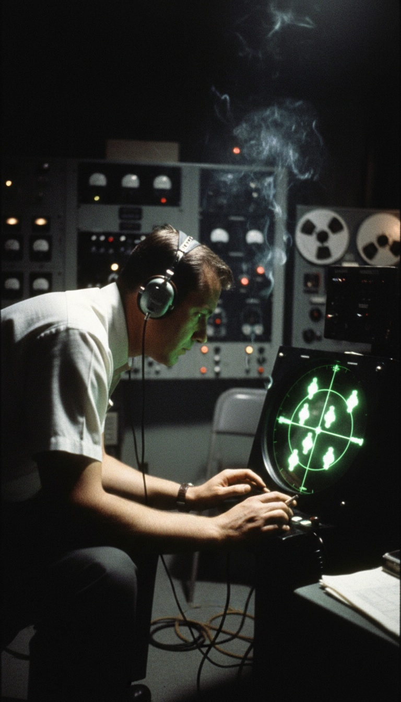

In July 1952 unknown objects flew over the White House on two consecutive weekends, and the United States Air Force could not stop them, could not catch them, and could not name them.
This is not folklore. This is radar tape, tower logs, and the sworn accounts of the men who ran air traffic control for the capital of the United States. The targets sat over the most restricted airspace on Earth. The Capitol. The White House. The jets went up. The objects left. The jets went home. The objects came back. And when the country demanded an answer, the Air Force called the largest press conference it had held since the Second World War and pointed at the weather.

Seven Targets Over Restricted Airspace
At 11:40 pm on Saturday, July 19, 1952, air traffic controller Edward Nugent was working the radar scope at Washington National Airport when seven blips appeared where no aircraft were flying. Not near the airport. Fifteen miles south-southwest, then moving over the prohibited corridor that covers the Capitol and the White House. Nugent called over his supervisor, senior controller Harry Barnes, who ran the Air Route Traffic Control Center. Barnes checked the equipment. The radar was working. The targets were real returns, and they were loitering over ground that no pilot on the planet is cleared to cross.
Two Radars, One Sky
Barnes did what a professional does. He called the tower at Washington National, where controller Howard Cocklin had the same targets on a second scope and could see a bright orange light out the tower window where his radar said one should be. Then Barnes called Andrews Air Force Base, ten miles east across the Potomac. Andrews had the objects too, on its own independent radar set. Three scopes, two facilities, miles apart, all painting the same targets in the same sky. Two radars do not share a hallucination, and three do not share a malfunction.
The sky agreed with the scopes. Captain S.C. Pierman of Capital Airlines Flight 807, holding for takeoff at National, was asked to look for the targets once airborne. Over fourteen minutes he reported six fast white lights, and Barnes confirmed that each sighting Pierman called out matched a return on his scope at that position in that moment. A veteran airline captain, a veteran controller, and a radar screen all telling one story in real time.
The Objects Played Games With the Jets
The Air Force scrambled F-94 Starfire interceptors from New Castle Air Force Base in Delaware. What happened next is the part that ends every weather argument before it starts. The moment the fighters arrived over Washington, the targets vanished from the scopes. The fighters searched, found nothing, and broke off for fuel. The moment they left, the targets returned to the exact airspace they had been holding. That sequence ran twice in one night. Barnes wrote afterward that the objects became most active precisely when the interceptors were near, and that everything about their movement read as deliberate. Operators computed the targets ambling at 100 miles per hour, then one return crossing the scope at a calculated 7,000 miles per hour. Nothing in the 1952 inventory of any nation did that.
One Week Later They Came Back
On the night of July 26, 1952, seven days later almost to the hour, the returns reappeared over Washington. Same scopes. Same restricted corridor. This time the intercept got closer. Lieutenant William Patterson took his F-94 into the cluster and radioed that the lights had surrounded his aircraft. He asked ground control what he should do. In the radar room at National that night stood Albert Chop, the Pentagon's own press liaison for Project Blue Book, and Chop later described the silence that followed Patterson's question. Nobody on the ground had an answer for a combat pilot ringed by objects his government could not identify. Controllers tracked the returns for roughly six hours before dawn scattered them.
The objects vanished from the scopes the moment the fighters arrived, and returned the moment the fighters broke off for fuel. Weather does not check your fuel gauge.
The Largest Press Conference Since the War
By Monday the story owned every front page in America, and President Truman personally had his Air Force aide, Brigadier General Robert Landry, call Project Blue Book demanding answers. On July 29, 1952, Major General John Samford, the Air Force Director of Intelligence, stood up at the Pentagon in front of the largest press gathering the building had hosted since 1945 and blamed temperature inversion, a bend in the radar beam caused by warm air sitting on cool air. The room wrote it down and the story died. Except the man who ran Project Blue Book would not let it die. Captain Edward Ruppelt, the officer in charge of the Air Force's own UFO investigation, wrote in his 1956 book The Report on Unidentified Flying Objects that the inversion over Washington those nights was far too weak to produce those returns. The weather data was checked. The inversion was routine, the kind that sits over Washington on countless summer nights without painting a single phantom target, and it could not explain solid returns tracked simultaneously by three separate radar installations.
The Detail Nobody at the Pentagon Would Touch
Barnes said it plainly in print that week: inversion ghosts drift with the weather, and these targets maneuvered. They held position over the White House, scattered when intercepted, regrouped when the sky was clear, and did it on two weekends in a row. An atmospheric bend in a radar beam does not react to an F-94's arrival time. It does not surround a fighter and hold formation. It does not return to the same restricted corridor seven nights later like an appointment. Reaction is the signature of intent, and every man on those scopes saw intent.
Washington knew it too. Six months after Samford's podium performance, in January 1953, the CIA quietly convened the Robertson Panel, a closed scientific review of the UFO problem chaired by physicist Howard Robertson, with the Washington sightings squarely in the file. If a temperature inversion settled the matter in July, the Central Intelligence Agency spent that winter studying a weather report.
Strip it to the receipts. Three radar installations tracked the same objects over the White House. Trained interceptor pilots were outmaneuvered by them twice in eight days. The head of the Air Force's own investigation put in writing that the weather could not account for it. Seventy years later, not one of those seven targets has ever been identified, and the tapes from those nights have never been released in full.
Something held position over the capital of the most heavily defended nation on Earth, watched its fighters come and go, and left on its own schedule. It knew the airspace. It knew the intercept patterns. It came back a week later to prove the first night was no accident. So answer the question the Pentagon never did. What was over Washington in July 1952, and what was it waiting for? Drop your theory below.
Before you go
7 books the Vatican doesn't want you reading. Free PDF, the texts they cut, with sources. Joined by 140+ Inner Circle members.
No spam. Unsubscribe anytime.
Go deeper
The Hidden Canon, Vol. I, Enoch. Jubilees. Thomas. Mary. Judas. 90 pages, 14 chapters, every receipt cited. The books your Bible quietly removed.
Read the Canon →Books that informed this investigation
As an Amazon Associate, Hidden Epoch earns from qualifying purchases. Cost to you: nothing.
Research safely
The VPN we use to research without being tracked. First 3 months free.
Get NordVPN →